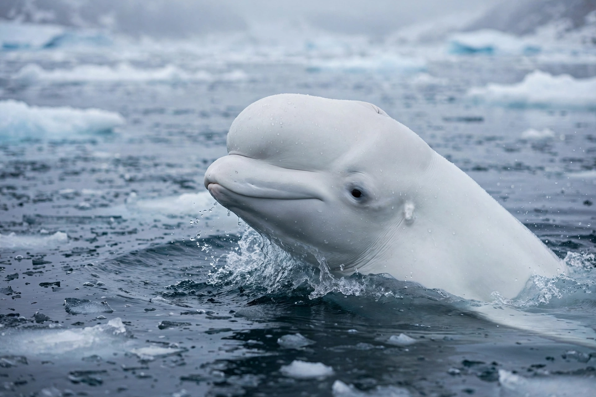

Beluga whale
The beluga whale (Delphinapterus leucas) is an Arctic and sub-Arctic cetacean. It is one of two living members of the family Monodontidae, along with the narwhal, and the only member of the genus Delphinapterus. It is also known as the white whale, as it is the only cetacean to regularly occur with this colour; the sea canary, for its high-pitched calls; and the melonhead, though that more commonly refers to the melon-headed whale.
 | |
| Conservation status | Least Concern (IUCN); Cook Inlet population Critically Endangered |
|---|---|
| Kingdom | Animalia |
| Order | Artiodactyla / Cetacea |
| Family | Monodontidae |
| Genus | Delphinapterus |
| Species | D. leucas |
| Length | 3.5–5.5 m |
| Mass | 700–1,600 kg |
Description
Adults are unmistakably white; calves are born grey and whiten over several years. The beluga lacks a dorsal fin — an adaptation to swimming under sea ice — having instead a low dorsal ridge. Its bulbous forehead, the "melon", is flexible and can change shape, aiding echolocation. Uniquely among whales, its neck vertebrae are unfused, allowing it to turn its head sideways. It has a thick layer of blubber, up to 15 cm, insulating it in near-freezing water.
Distribution and behaviour
Belugas inhabit the Arctic Ocean and adjacent seas — around Canada, Alaska, Russia, Greenland and Svalbard — and migrate seasonally, gathering in summer in warm, shallow estuaries such as the St. Lawrence River, Churchill River and Cook Inlet. They are highly social, travelling in pods of 2–25, and exceptionally vocal: their repertoire of clicks, whistles and calls earned them the name "sea canaries". They feed on fish (including Arctic cod and salmon), shrimp, squid and benthic invertebrates, using echolocation in dark or turbid water.
Conservation
The species as a whole is listed as Least Concern, with a global population around 150,000–200,000, but several subpopulations are depleted and the Cook Inlet stock is critically endangered. Threats include hunting (regulated subsistence hunts continue in Canada, Alaska and Russia), pollution — beluga carcasses in the St. Lawrence have been found so contaminated they were treated as toxic waste — noise, habitat change and declining sea ice. A famous individual, Hvaldimir, appeared in Norway in 2019 wearing a harness, prompting speculation he had escaped a Russian military programme.
See also
Categories: Monodontidae · Mammals of the Arctic · Whales